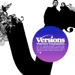
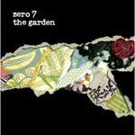
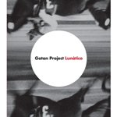
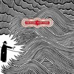

Najbolje ploče 2006. elektro/beat/hip-hop/downtempo, vrh liste
 5. Thievery Corporation "Versions"
Meni Thievery Corporation prijaju, tako da me svaka njihova nova ploča obraduje. Ova je prepuna zanimljivih obrada (Nouvelle Vague, Herp Alpert, The Doors...), novih verzija poznatih stvari, ali ovo je više od proste zbirke remiksa - "Versions" kao album zvuči potpuno zaokruženo.
Moram da priznam da ipak više volim kada T.C. potpišu numere na albumu. Zato, za "Versions", ove godine "samo" mesto br.5
4. Zero 7 "The Garden"
"Zero 7 are sometimes viewed as the British counterpart to the French downtempo group Air", kaže Wikipedia; kad malo bolje razmislim, potpuno su u pravu - Zero 7 jesu britanski downtempo odgovor na Air. Da budem potpuno iskren, mom srcu su Air ipak bliži, ali to nema nikakve veze sa temom.
"The Garden" jeste album fine muzike, možda nešto drugačije od prethodnih ostvarenja, zrelije u svakom slučaju. Mene neke stvari ("Fine Social Scene", npr.) neodoljivo podsećaju na Steely Dan, neke druge na Fleetwood Mac i na neki čudan način to mi je sasvim OK. U nekim za muziku lošijim godinama, možda bi ova ploča stigla u prve tri, ovako ostaje prikovana za mesto br.4 i bez brončanog odličja.
3. Gnarls Barkley "St. Elsewhere"
Evo odličnog dokaza da sve što je hit ne mora da bude i potpuni shit. Po mnogo čemu Gnarls Barkley su iznenadjenje sezone, (ne)rezonski spoj geak percepcije savremene plesne muzike i soula.
Singl "Crazy" je definitivno najveći hit prethodne godine; ali Gnarls Barkley nisu one-hit-wonder, naprotiv, ovde album tek počinje. Potpuno šizoidni slojevi ritmova i buke za koje je odgovoran DJ/Producer Danger Mouse ovde služe kao podloga za sjajan glas Cee-Loa (rapper/singer/songwriter/producer/ex-Goodie Mob member). Super mi je i obrada "Gone Daddy Gone", vrlo smeo potez i opet na izgled nelogičan. Ali, ovo je 21.vek, freekovi su u kontroli, uživajte!
2. Gotan Project "Lunatico"

Da li "Lunatico" dobro nosi teret naslednika senzacionalnog prvenca La Revancha Del Tango iz 2001.? Ne, na prvo slušanje, ali nakon petog, šestog preslušavanja abuma dešava se nešto sasvim izuzetno - "Lunatico" ulazi pod kožu, obuzima svojom atmosferom, i iz malog razočaranja prelazi u veliko zadovoljenje. "Lunatico" ima više živih instrumenata nego ranija ostvarenja Gotana, ali to je možda ipak samo pitanje prave mere, recept je isti.
Teško mi je da nešto taktiziram, analiziram, mudrujem...kada su Gotan Project u pitanju - jednostavno volim njihovu muziku, a ova ploča mi je u 2006. donela pregršt prijatnih trenutaka uz čašu, dve Malbeca; stoga nema mnogo mudrovanja,"Lunatico" zaslužuje sve zvezdice i mesto br.2
1. Thom Yorke "The Eraser"
Možda zvuči čudno, ali debi solo album pevača i vodje sastava Radiohead je suva elektronika. Ona najfinija, mračna, lična, melahonholična elektronika. Iskrivljeni loopovi, distorzirani mehuri zvuka koji pucaju pred ušima, a ispod moćnog vokala koji pripoveda istinske, x-rated priče o usamljenosti, patnji, ljubavi... Lako se može desiti da se ljubiteljima Radioheada, posebno iz prve, pre-Kid A faze, ne svidi ovaj album. I kao što je Kid A bio vizionarska ploča, "The Eraser" je ploča iz tog, nagoveštenog prošlo-budućeg-sadašnjeg trenutka, jedan čovek i jedna mašina remek delo, za jedno od najblistavijih sazveždja muzičkog elektro neba 2006.
U sledećem izdanju rock & indie lista, so stay tuned, baby!
Komentari
Svidja mi se kako to Kiko isprica...
A evo Googlove liste na sta su se ljudi przili (sto rece Ki): http://www.google.com/intl/en/press/zeitgeist2006.html
A na sta Srbi:
http://www.b92.net/tehnopolis/internet.php?nav_id=224066
 RSS feed
RSS feed
 sadržaji se objavljuju pod
sadržaji se objavljuju pod
Braaaaaaaavo!!!
Posebno za Thom Yorka ali i meni vrlooo vrlooo drage Thievery Corporation.
Super!
etotako | 19.12.06 13:32